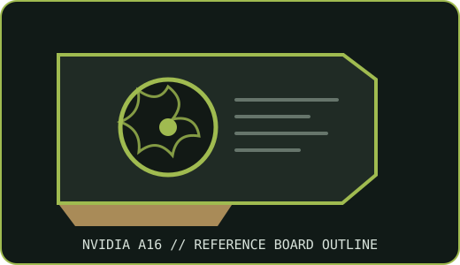

[ NVIDIA // IDENTIFIED GRAPHICS ACCELERATOR ]
NVIDIA A16 64 GB PCIe accelerator
NVIDIA Ampere; four independent GA107 GPUs. This record describes the specified PCIe product configuration, not every OEM implementation.

MODEL IDENTIFICATION: A16 combines four GPU devices with 64 GB aggregate memory; it is not one GPU with a single 64 GB addressable frame buffer. Match the board label, part number and revision before applying reference specifications.
Recorded specifications
| Cataloged part | NVIDIA A16 64 GB PCIe accelerator |
|---|---|
| GPU architecture / chip | Four GA107 Ampere GPUs on one board |
| VRAM type / capacity / bus | 64 GB total GDDR6 with ECC (4 × 16 GB); each GPU has a 128-bit memory bus and 200 GB/s bandwidth |
| Board power / power connector | 250 W maximum board power; one CPU 8-pin auxiliary input (verify exact server/OEM cable pinout) |
| Host interface | PCIe Gen4 x16 |
| Outputs / form factor / cooling | No external display outputs; purpose-built for multi-session virtual desktops; dual-slot, full-height, full-length passive server card |
| Model boundary | A16 combines four GPU devices with 64 GB aggregate memory; it is not one GPU with a single 64 GB addressable frame buffer. |
| Archive identification | Record complete board part number, hardware revision, serial/date code, VBIOS/firmware, device/subsystem IDs, driver version, power lead and source-document revision. |
Compatibility and installation caveats
Use in a server validated for the card’s four-device topology, 250 W budget and directed airflow. Confirm that the hypervisor/vGPU software license, supported OS, NVIDIA vGPU manager and host driver release all support A16. Do not assume desktop driver or application compatibility from the aggregate memory figure. Confirm exact OEM auxiliary connector wiring.
- Check the exact card manual and server qualification list for slot, power pinout, chassis clearance, airflow and firmware support before installation.
- Preserve the driver and firmware source/version used for evaluation; do not assume consumer GeForce software or an unqualified workstation supports data-center features.
- Power only a board with undamaged connectors and verified supply/cable pinout; record condition before bench testing.
Manufacturer sources
- NVIDIA A16 data sheet for virtual GPU deploymentsOfficial NVIDIA technical reference for model-level configuration; compare to the exact OEM board and revision.
- NVIDIA A16 product and vGPU platform documentationNVIDIA model/product documentation and platform context; verify the actual card label and system manual.
Specifications are reference-board values unless explicitly tied to a named OEM SKU. Cable pinout, cooling and feature enablement can vary by system.